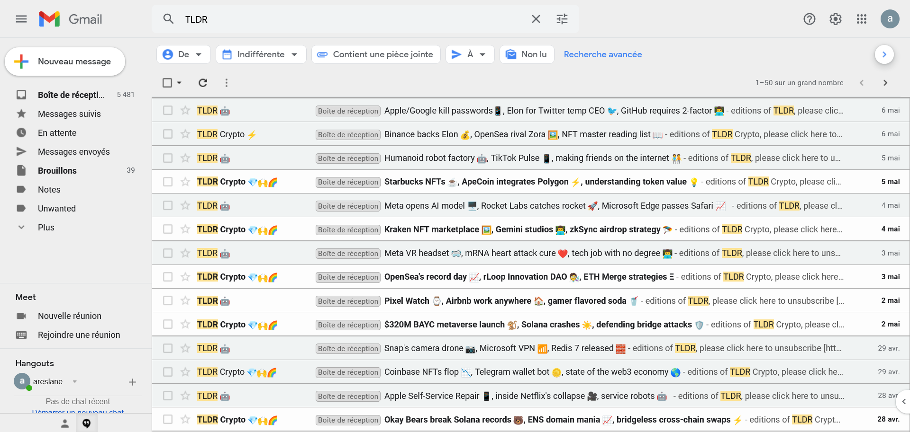

Mode operatoire
Pour mener à bien ma veille technologique je passe par des sites dédiés au regroupement de l'ensemble des flux de données, que j'utilise notamment :
Je reçois également des news-letter par mail m’informant des nouveautés dans le secteur technologique et dans la crypto monnaie

Qu’est-ce que l’Intelligence Artificielle ?
L’Intelligence Artificielle désigne des technologies capables de reproduire certaines capacités humaines comme :
- l’apprentissage
- l’analyse
- la prise de décision
- la génération de contenu
Les IA génératives comme ChatGPT, Gemini ou Copilot permettent désormais :
- de générer du code
- d’aider au débogage
- de créer des applications plus rapidement
Selon plusieurs sources spécialisées, l’IA devient un outil majeur dans le secteur informatique et particulièrement dans le développement web et logiciel
Problème
L’Intelligence Artificielle présente plusieurs risques dans le domaine informatique. Le code généré peut contenir des erreurs ou des failles de sécurité. Certains développeurs deviennent dépendants des outils d’IA et progressent moins techniquement. Les cybercriminels utilisent aussi l’IA pour créer des attaques plus sophistiquées. La protection des données personnelles devient également un enjeu important. Enfin, l’automatisation peut transformer certains métiers du développement informatique.
Solution
Pour limiter ces risques, les développeurs doivent toujours vérifier le code généré par l’IA. Il est important de continuer à apprendre les bases du développement sans dépendre totalement des outils automatisés. Les entreprises doivent renforcer leur cybersécurité avec des protections modernes et des formations. Le respect du RGPD et la protection des données personnelles doivent être prioritaires. Enfin, l’IA doit être utilisée comme une aide au travail et non comme un remplacement complet du développeur.
les articles utilisés
https://coursbtssio.fr/blog/comment-realiser-une-veille-technologique-en-bts-sio?utm_source=chatgpt.com
https://iafeed.fr/?utm_source=chatgpt.com
https://www.cnil.fr/fr?utm_source=chatgpt.com
https://www.cert.ssi.gouv.fr/?utm_source=chatgpt.com
https://www.cybermalveillance.gouv.fr/?utm_source=chatgpt.com